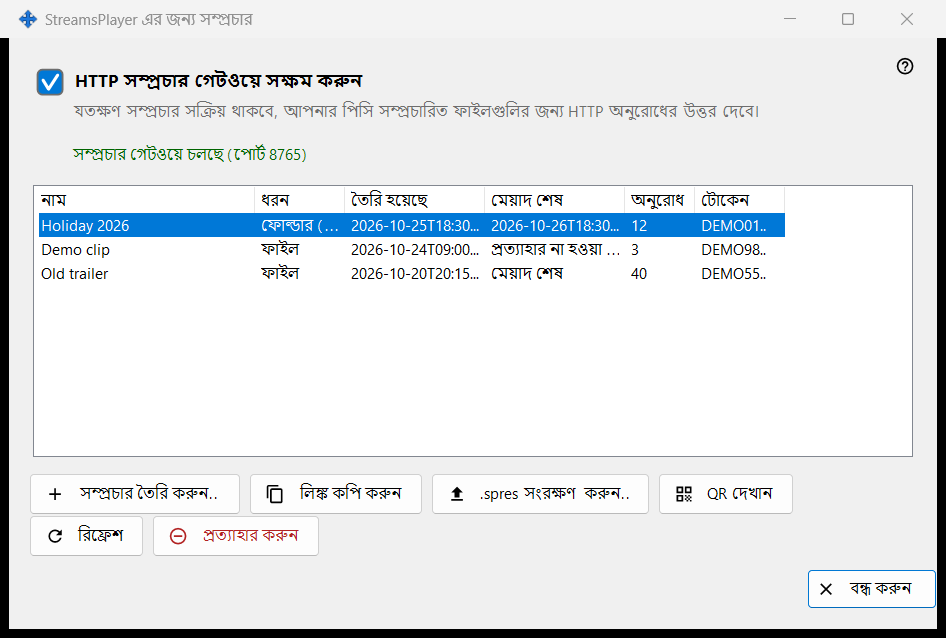
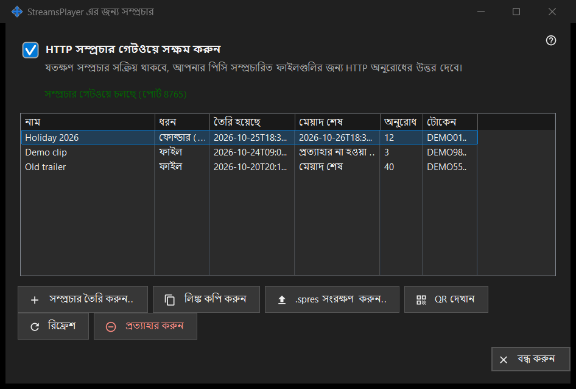

StreamsPlayer এর জন্য সম্প্রচার
এটি কীসের জন্য
মিডিয়া ফাইল ও ফোল্ডারের যে HTTP সম্প্রচার এই পিসি StreamsPlayer অ্যাপকে দেয়, সেগুলো পরিচালনা করে। এটি Share Manager-এর মূল উইন্ডোর সম্প্রচার.. বোতাম বা যোগ করুন মেনু আইটেম থেকে খোলে; সেগুলো তখনই দেখা যায় যখন শেয়ারিং সার্ভিস সম্প্রচারের সমর্থন জানায়। পথসহ চালু করলে এটি খোলে এবং সরাসরি ওই পথের জন্য সম্প্রচার তৈরি করুন ডায়ালগে যায়।


এই ক্রমে
- HTTP সম্প্রচার গেটওয়ে সক্ষম করুন-এ টিক দিন, অথবা শুধু একটি সম্প্রচার তৈরি করুন, তাতে গেটওয়ে চালু হয়ে যায়।
- সম্প্রচার তৈরি করুন.. চাপুন, মিডিয়া ফাইল বেছে নিন, শিরোনাম, মেয়াদ ও ইন্টারনেট বিকল্প ঠিক করুন এবং সম্প্রচার করুন চাপুন।
- লিঙ্কটি ক্লিপবোর্ডে কপি হয়।
- একটি সারি নির্বাচন করে সম্প্রচারটি কোনো ডিভাইসকে দিতে লিঙ্ক কপি করুন, .spres সংরক্ষণ করুন.. বা QR দেখান ব্যবহার করুন।
- আর দরকার না হলে সম্প্রচারটিতে প্রত্যাহার করুন চাপুন।
উপাদানসমূহ
গেটওয়ে সুইচ
চেকবক্স HTTP গেটওয়ে চালু বা বন্ধ করে। তার নিচের লাইনে সম্প্রচার গেটওয়ে বন্ধ বা সম্প্রচার গেটওয়ে চলছে (পোর্ট N) লেখা থাকে। গেটওয়ে চলার সময় এই পিসি সম্প্রচার ফাইলের HTTP অনুরোধের উত্তর দেয়। গেটওয়ে চালু না হলে (পোর্ট, ফায়ারওয়াল) চেকবক্স তার আসল অবস্থায় ফিরে যায় এবং কারণ তার নিচে একটি লাল লাইনে দেখা যায়; প্রত্যাখ্যান কখনো ডায়ালগ খোলে না।
সম্প্রচার তালিকা
কলাম: নাম, ধরন (ফাইল, বা উপাদানের সংখ্যাসহ ফোল্ডার), তৈরি হয়েছে, মেয়াদ শেষ (একটি তারিখ, প্রত্যাহার না হওয়া পর্যন্ত বা মেয়াদ শেষ), অনুরোধ এবং টোকেন, যার শুধু প্রথম ছয়টি অক্ষর দেখায়। তালিকা প্রতি 5 সেকেন্ডে নিজেকে আবার পড়ে। সারিতে ডাবল ক্লিক করলে তার লিঙ্ক কপি হয়।
সম্প্রচার তৈরি করুন..
একটি মিডিয়া ফাইল চায় এবং সম্প্রচার তৈরি করুন ডায়ালগ খোলে। আপনি তা গ্রহণ করলে দরকারে গেটওয়ে চালু হয়, সম্প্রচার তৈরি হয় এবং তার লিঙ্ক গোপনীয়তার চিহ্নসহ ক্লিপবোর্ডে কপি হয়; একটি বার্তা কপির নিশ্চিতকরণ দেয়।
রিফ্রেশ ও প্রত্যাহার করুন
রিফ্রেশ শুধু ফোল্ডার সম্প্রচারের জন্য পাওয়া যায় এবং সার্ভিসকে সেটি রিফ্রেশ করতে বলে; একটি বার্তা তা নিশ্চিত করে। প্রত্যাহার করুন যেকোনো সারিতে কাজ করে এবং আগে জিজ্ঞাসা করে: সম্প্রচার X প্রত্যাহার করবেন? লিঙ্কটি অবিলম্বে কাজ করা বন্ধ করবে। প্রত্যাহার করা সম্প্রচার ফেরানো যায় না; নতুন একটি তৈরি করুন।
পৃষ্ঠা বন্ধ থাকলে
শেয়ারিং সার্ভিস উত্তর না দিলে বা সম্প্রচারের সমর্থন না থাকলে পৃষ্ঠাটি নিজের জায়গাতেই বন্ধ হয়ে যায় এবং লাল লাইন কারণ জানায়, যেমন সম্প্রচার সার্ভিসের এই সংস্করণ পুরনো, বা কাজটি সম্পূর্ণ হয়নি এবং বিবরণ লগে আছে।
ম্যানেজার সেটিংস · SFTP শেয়ারিং সেটিংস · এক্সচেঞ্জ সার্ভার সেটিংস